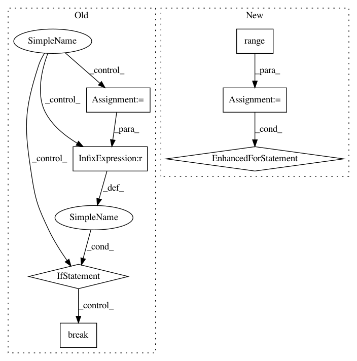

2c88f7c0b01bf7559372091ce906d0a29ffea529,examples/pytorch/graphsage/experimental/train_dist.py,,run,#Any#Any#Any#,31
Before Change
print("Epoch {:05d} | Step {:05d} | Loss {:.4f} | Train Acc {:.4f} | Speed (samples/sec) {:.4f} | GPU {:.1f} MiB | time {:.3f} s".format(
epoch, step, loss.item(), acc.item(), np.mean(iter_tput[3:]), gpu_mem_alloc, np.sum(step_time[-args.log_every:])))
start = time.time()
num_steps -= 1
// We have to ensure all trainer process run the same number of steps.
if num_steps == 0:
break
toc = time.time()
print("Epoch Time(s): {:.4f}, sample: {:.4f}, data copy: {:.4f}, forward: {:.4f}, backward: {:.4f}, update: {:.4f}, //seeds: {}, //inputs: {}".format(
toc - tic, sample_time, copy_time, forward_time, backward_time, update_time, num_seeds, num_inputs))
epoch += 1
After Change
profiler = Profiler()
profiler.start()
epoch = 0
for epoch in range(args.num_epochs):
tic = time.time()
sample_time = 0
copy_time = 0
forward_time = 0
backward_time = 0
update_time = 0
num_seeds = 0
num_inputs = 0
start = time.time()
// Loop over the dataloader to sample the computation dependency graph as a list of
// blocks.
step_time = []
for step, blocks in enumerate(dataloader):
tic_step = time.time()
sample_time += tic_step - start
// The nodes for input lies at the LHS side of the first block.
// The nodes for output lies at the RHS side of the last block.
input_nodes = blocks[0].srcdata[dgl.NID]
seeds = blocks[-1].dstdata[dgl.NID]
// Load the input features as well as output labels
start = time.time()
batch_inputs, batch_labels = load_subtensor(g, seeds, input_nodes, device)
copy_time += time.time() - start
num_seeds += len(blocks[-1].dstdata[dgl.NID])
num_inputs += len(blocks[0].srcdata[dgl.NID])
// Compute loss and prediction
start = time.time()
batch_pred = model(blocks, batch_inputs)
loss = loss_fcn(batch_pred, batch_labels)
forward_end = time.time()
optimizer.zero_grad()
loss.backward()
compute_end = time.time()
forward_time += forward_end - start
backward_time += compute_end - forward_end
// Aggregate gradients in multiple nodes.
for param in model.parameters():
if param.requires_grad and param.grad is not None:
th.distributed.all_reduce(param.grad.data,
op=th.distributed.ReduceOp.SUM)
param.grad.data /= args.num_client
optimizer.step()
update_time += time.time() - compute_end
step_t = time.time() - tic_step
step_time.append(step_t)
iter_tput.append(num_seeds / (step_t))
if step % args.log_every == 0:
acc = compute_acc(batch_pred, batch_labels)
gpu_mem_alloc = th.cuda.max_memory_allocated() / 1000000 if th.cuda.is_available() else 0
print("Epoch {:05d} | Step {:05d} | Loss {:.4f} | Train Acc {:.4f} | Speed (samples/sec) {:.4f} | GPU {:.1f} MiB | time {:.3f} s".format(
epoch, step, loss.item(), acc.item(), np.mean(iter_tput[3:]), gpu_mem_alloc, np.sum(step_time[-args.log_every:])))
start = time.time()
toc = time.time()
print("Epoch Time(s): {:.4f}, sample: {:.4f}, data copy: {:.4f}, forward: {:.4f}, backward: {:.4f}, update: {:.4f}, //seeds: {}, //inputs: {}".format(
toc - tic, sample_time, copy_time, forward_time, backward_time, update_time, num_seeds, num_inputs))
epoch += 1
toc = time.time()
print("Epoch Time(s): {:.4f}".format(toc - tic))
//if epoch % args.eval_every == 0 and epoch != 0:
// eval_acc = evaluate(model, g, g.ndata["features"], g.ndata["labels"], val_nid, args.batch_size, device)
// print("Eval Acc {:.4f}".format(eval_acc))
profiler.stop()
print(profiler.output_text(unicode=True, color=True))
// clean up
g._client.barrier()
In pattern: SUPERPATTERN
Frequency: 3
Non-data size: 7
Instances
Project Name: dmlc/dgl
Commit Name: 2c88f7c0b01bf7559372091ce906d0a29ffea529
Time: 2020-07-01
Author: zhengda1936@gmail.com
File Name: examples/pytorch/graphsage/experimental/train_dist.py
Class Name:
Method Name: run
Project Name: scikit-image/scikit-image
Commit Name: cc31d7f56d6cd8569a5f7b47c254d89a85e8691b
Time: 2017-04-17
Author: grlee77@gmail.com
File Name: skimage/transform/pyramids.py
Class Name:
Method Name: pyramid_laplacian
Project Name: calico/basenji
Commit Name: 25da570d5c5baa71d55dc9623e3a8bb20f878f86
Time: 2019-11-11
Author: drk@calicolabs.com
File Name: basenji/trainer.py
Class Name: Trainer
Method Name: fit_tape